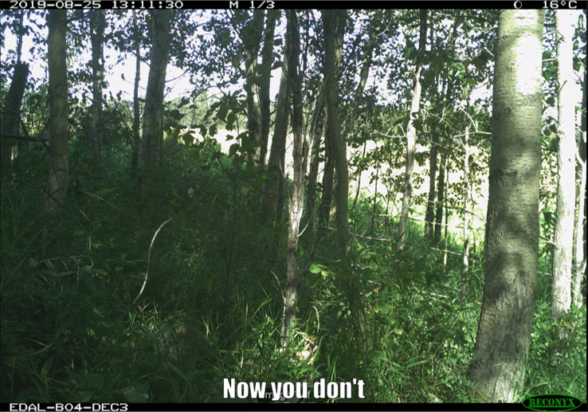

Detection probability#
Detection probability categories are defined as follows:
Low:
< 0.1 (Tobler & Powell, 2013)
< 0.05 (Shannon et al., 2014)
0–0.37 (Chatterjee et al., 2021)
Medium:
0.37–0.67 (Chatterjee et al., 2021)
High:
0.67–1 (Chatterjee et al., 2021)
> 0.5 (Mackenzie & Royle, 2005)
Unknown: select this option if you’re not sure of the detection probability of your Target Species (single or multiple species)
Multiple: select this option if your study include multiple Target Species.
How this relates to survey design
Detection probability (aka detectability)**: The probability (likelihood) that an individual of the population of interest is included in the count at time or location i.
We use this information to adjust the recommended camera days per camera location and total number of camera days. For example, if the species is hard to detect, you may have to deploy cameras for longer to ensure you’ve sampled long enough to say that the species truly was not there (vs. it was there, but you did not detect it; “missed detections”, e.g., high cover of shrubs impeding your ability to see the species).
You may need to consult previous studies to get a sense of which category is the most appropriate for your
Select “Unknown” if you’re not sure.
How does that work?
Individuals and/or species are not always detected when they are present (i.e., detected “imperfectly”; MacKenzie et al., 2004). Missed detections occur or many reasons, including due characteristics of the environment (e.g., due to cover of vegetation), the time period (e.g., seasons), characteristics of the species (e.g., cryptic nature or small size), etc. The question here is asking about detection probability as it relates to the characteristIcs of the species (not the species in a particular habitat type or during a specific season).
{kind=link}
Why do we care?
We care about this because when you fail to detect an individual/species that was, in fact, present, this is called a “false absence”, which may lead to incorrect conclusions from the data. Understanding and correcting for sources of this type of error is often thought of in terms of probabilities (i.e., “detection probability” aka detectability).
It’s not an exact science
Since detectability is affected by many other processes, detectability is best incorporated from models that use your data since this will result in the best suited infromation to inform your design; however, when you are first designing your study, this is not possible…..[[insert more here]]
Analysis aside
Many sources of detection error can be accounted for in analysis; this is done by assessing the relationships between the characteristics of the environment that we might expect to affect detection (e.g., cover of shrubs in front of the camera), and information on where (and when) the species was and was not detected. For example, there were consistently fewer detections on cameras placed in high shrub cover.
By assessing the relationships at locations repeatedly sampled over time, we begin to unravel the relationship between the environmental characteristics and missed detections on your cameras. We can then use this information to determine if we have sampled long enough (i.e., do we have enough information to differentiate between missed detections and true absences) and/or correct for this error in analysis by incorporating these effects in our models.
Before study design choices are made, there is one critical concept to understand in remote camera research, which may impact study design choices at all levels of the data hierarchy. Reliable use of remote cameras to detect wildlife species hinges on the assumption that what is captured on the cameras accurately reflects what is present on the landscape. However, species are often detected “imperfectly,” meaning that they are not always detected when they are present (i.e., imperfect detection; e.g., due to cover of vegetation, cryptic nature or small size) (MacKenzie et al., 2004). Imperfect detection can occur because the camera failed to capture an individual present at the site or because the animal was simply not present during the survey period (Martin et al., 2005).
Imperfect detection results in “false absences” and may lead to incorrect conclusions from the data. Understanding and correcting for sources of “false absences” is often thought of in terms of probabilities. Detection probability is the probability (likelihood) that an individual from the population of interest is included in the count at time or location i (MacKenzie & Kendall, 2002). Detection probability can be influenced through multiple processes and at multiple scales. Understanding the sources of “false absences” and factors that affect detection probabilities is an essential step when designing a study, deploying cameras and analyzing camera data.
The detection probability of an animal by a camera depends on three conditional probabilities (Pr) of detection that may operate alone or potentially in combination (Figure 1).
{kind=link}
Figure 1. Three conditional probabilities (Pr) of detection that may impact the detection probability of an animal (or species) by a camera (adapted from Moeller et al. [2023], Hofmeester et al. [2019], and Findlay et al. [2020]).
Detection probability can be affected by species-specific characteristics, Camera Model specifications and set-up, and environmental variables (Hofmeester et al., 2019). For example, species-specific characteristics (individuals or populations), such as body size (e.g., O’Brien et al., 2011), behaviour (e.g., Caravaggi et al., 2020; Rowcliffe et al., 2011), and rarity can influence detection probability, with larger, bolder and more common species generally having higher detection rates. Camera Model, specifications and set-up, such as the Trigger Sensitivity, Camera Height, or angle may affect detection probability in that smaller species might not be detected or identifiable if the Trigger Sensitivity is low, or the Camera Height or angle is too high. The Camera Direction could impact the probability of an animal triggering a camera if it is directed towards an object that impedes the Field of View (FOV) or image quality (e.g. due to sun glare). Environmental factors (e.g., vegetation cover, snow depth) may affect detection probability and occurrence (e.g., Becker et al., 2022; Hofmeester et al., 2019; Iknayan et al., 2014; Steenweg et al., 2019). For example, a low number of detections in a densely vegetated site might be because of poor camera visibility or avoidance of this habitat by the species of interest.
Hofmeester et al. (2019) suggested there are six scales (orders) that may impact detection probability and that should be considered within an explicit time period (adapted from Hofmeester et al. [2019]; Figure 2):
Distribution range (1st order; i.e., the physical or geographical range of a species)
Landscape (2nd order; i.e., the location of an individual’s home range within the geographic range)
Habitat patch (3rd order; i.e., usage of habitat components within an individual’s home range)
Microsite (4th order; usage of microhabitats such as food items/feeding patches/nest sites/movement trails, etc. within a habitat)
Camera specification / set-up (5th order; i.e., factors that affect the probability that an animal triggers the camera if present)
Image (6th order; i.e., factors that affect correct identification of animals or individuals)
{kind=link}
Figure 2. Spatial scales (1-6) and processes that determine the detection probability (Hofmeester et al., 2019; abbreviated figure caption).
It is important to consider how all these factors and scales will impact study design. Unmeasured variation in detection probability can result in the inability to differentiate the effects of detection probability vs. habitat preference (Jennelle et al., 2002) and, in turn, cause erroneous estimates of occurrence and abundance (Burton et al., 2015; Dénes et al., 2015; Kays et al., 2021).
Factors that influence detection probability at the microsite and camera specification / set-up scales are likely to result in the largest biases and thus warrant the most consideration (see Hofmeester et al. [2019] for details). Therefore, it is particularly important to consider how to place cameras to avoid such biases. Deploying cameras in a consistent fashion (e.g., carefully ensuring that cameras are always set at the same Camera Height, orientation (direction), and angle is essential.
{kind=link}
{kind=link}

figure5_caption

figure6_caption
vid1_caption
vid2_caption
vid3_caption
vid4_caption
vid5_caption
vid6_caption
Check back in the future!
Type |
Name |
Note |
URL |
Reference |
|---|---|---|---|---|
resource1_type |
resource1_name |
R package for analyzing wildlife data with detection error |
Full ref here |
|
resource3_type |
resource2_name |
resource3_note |
resource3_url |
Full ref here |
resource3_type |
resource3_name |
resource3_note |
resource3_url |
Full ref here |
resource4_type |
resource4_name |
resource4_note |
resource4_url |
Full ref here |
resource5_type |
resource5_name |
resource5_note |
resource5_url |
Full ref here |
resource6_type |
resource6_name |
resource6_note |
resource6_url |
Full ref here |
resource7_type |
resource7_name |
resource7_note |
resource7_url |
Full ref here |
resource8_type |
resource8_name |
resource8_note |
resource8_url |
Full ref here |
resource9_type |
resource9_name |
resource9_note |
resource9_url |
Full ref here |
resource10_type |
resource10_name |
resource10_note |
resource10_url |
Full ref here |
resource11_type |
resource11_name |
resource11_note |
resource11_url |
Full ref here |
Alberta Remote Camera Steering Committee [RCSC], Stevenson, C., Hubbs, A., & Wildlife Cameras for Adaptive Management (WildCAM). (2024). Remote Camera Survey Guidelines: Guidelines for Western Canada. Version 3.0. Edmonton, Alberta. https://ab-rcsc.github.io/RCSC-WildCAM_Remote-Camera-Survey-Guidelines-and-Metadata-Standards/1_Survey-guidelines/1_0.1_Citation-and-Info.html
Chatterjee, N., Schuttler, T. G., Nigam, P., & Habib, B. (2021). Deciphering the rarity–detectability continuum: optimizing Survey design for terrestrial mammalian community. Ecosphere 12(9), e03748. https://doi.org/10.1002/ecs2.3748
MacKenzie, D. I., & Kendall, W. L. (2002) How Should Detection Probability Be Incorporated into Estimates of Relative Abundance? Ecology, 83(9), 2387–93. https://doi.org/10.1890/0012-9658(2002)083[2387:HSDPBI]2.0.CO;2
Mackenzie, D. I., & Royle, J. A. (2005). Designing occupancy studies: general advice and allocating Survey effort. Journal of Applied Ecology, 42, 1105–1114. https://doi.org/10.1111/j.1365-2664.2005.01098.x
Shannon, G., Lewis, J. S. & Gerber, B. D. (2014). Recommended Survey Designs for Occupancy Modelling using Motion-activated Cameras: Insights from Empirical Wildlife Data. PeerJ, 2, e532. https://doi.org/10.7717/peerj.532
(Undefined, 2013)
MacKenzie, D. I., & Kendall, W. L. (2002) How Should Detection Probability Be Incorporated into Estimates of Relative Abundance? Ecology, 83(9), 2387–93. https://doi.org/10.1890/0012-9658(2002)083[2387:HSDPBI]2.0.CO;2
Mackenzie, D. I., & Royle, J. A. (2005). Designing occupancy studies: general advice and allocating Survey effort. Journal of Applied Ecology, 42, 1105–1114. https://doi.org/10.1111/j.1365-2664.2005.01098.x